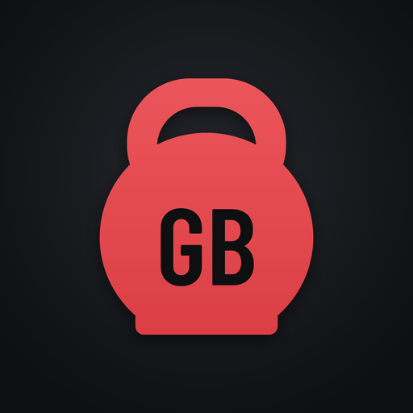

GymBro
Adatvédelmi tájékoztató
Röviden
Fiók nélkül a GymBro semmilyen adatot nem gyűjt és nem küld: minden, amit beírsz, csak ezen a telefonon van. Ha – nem kötelezően – online fiókot hozol létre, csak az kerül a szerverre, ami a fiókhoz kell (lásd lent).
Mit tárol az app?
- Edzések, sorozatok, súlyok, jegyzetek és edzéstervek
- Kardió-edzések (tevékenység, időtartam, szakaszok, táv, becsült kalória, érzés, jegyzet), a saját intervallumos futásaid, saját tevékenységeid és HIIT-edzéseid
- Étrend: heti beosztás, receptek, étkezés- és nasi-napló, bevásárlólista
- Testsúly és a helyi profilod (név, születési év, magasság, testsúly, edzési célok)
- Saját élelmiszerek (név, tápérték, vonalkód), érmek, napi kihívások
- Beállítások és emlékeztetők
Ezek az app privát tárhelyén vannak, más app nem fér hozzájuk.
Mit nem csinál?
- Fiók nélkül nincs regisztráció: a profil csak a telefonon létezik.
- Internetet csak az online fiók használ, regisztráció és belépés után; fiók nélkül az app semmit nem küld.
- Nincs reklám, analitika, hibajelentő vagy más külső szolgáltatás.
- Semmilyen adatot nem ad át és nem ad el senkinek.
Online fiók (nem kötelező)
- Mi kerül a szerverre: e-mail-cím, felhasználónév, megjelenő név (ha megadod), a 16+ nyilatkozat és a hozzájárulás ideje, egy titkosított kulcscsomag, valamint a naplód titkosított mentése (a legutóbbi kettő).
- A jelszavad nem kerül a szerverre: a telefon egy belőle levezetett belépési kulcsot küld, a titkosítás kulcsa pedig csak nálad van.
- A titkosított mentés: belépve az app naponta legfeljebb egyszer (ha változott valami), egy befejezett edzés vagy az étkezésnapló változása után kb. 10 perccel, illetve a „Mentés most” gombra feltölti a naplód titkosított másolatát. Végponttól végpontig titkosított: a kulcsa csak nálad van (a telefonon az Android Keystore védi), a szerver nem tudja elolvasni. A szerveren a legutóbbi két mentés marad meg.
- Barátok (ha használod): megtalálni csak a pontos felhasználóneveddel vagy a QR-kódoddal lehet, nyilvános kereső nincs. A barátaid a felhasználóneved, a megjelenő neved, és csak azt látják, amit megosztasz: a heti edzés- és kardiószámod, a heti sorozatod és az érmeid (a Barátok oldalon egyenként kikapcsolható). A naplód, a testsúlyod és az étrended soha nem kerül hozzájuk. A szerver tárolja a barátkapcsolatokat, a tiltásokat és a gratulációkat (👏 💪 🔥, szöveg nélkül); a gratulációk 90 nap után törlődnek. Bárkit letilthatsz.
- Közös kihívások (ha csatlakozol): a résztvevők a kihívás idejére látják egymás felhasználónevét, megjelenő nevét, heti edzéscélját és heti edzésszámát. A kihívás a vége után 90 nappal törlődik a szerverről; a sikeres kihívások (az éremhez) csak a telefonodon maradnak meg.
- Edzőprofil (ha edzőként jelentkezel): a profilod adatai (megjelenő név, bemutatkozás, profilkép, ország, megye, település, edzőtermek, szakterületek, nyelvek, irányárak, az általad megadott elérhetőségek és a végzettséged) a szerverre kerülnek, és jóváhagyás után bárki láthatja őket az edzőkeresőben, az appban és a weboldalon. Pontos címet nem kérünk. A profilkép a fénykép helyadatai nélkül, kicsinyítve kerül fel. A végzettséget igazoló képet csak a jóváhagyó látja, és a döntéskor azonnal töröljük (ha 30 napig nincs döntés, magától törlődik); csak a végzettség megnevezése és az ellenőrzés hónapja marad meg. A jóváhagyási döntéseket és az indokukat (név nélkül) a panaszok kezelése miatt 1 évig őrizzük. A profilt a Profil → Online fiók → Edzőprofilom alatt szüneteltetheted vagy törölheted, és a fiók törlése is törli. Jogalap: a profil közzététele a kérésedre (szolgáltatás); a profilkép, az e-mail-cím és a telefonszám megjelenítése a hozzájárulásod, amit a mező törlésével bármikor visszavonhatsz. Csak 18 év felett.
- Edzőkereső és jelentés (ha használod): belépve az app letölti a jóváhagyott edzők nyilvános listáját; a keresés és a szűrés a telefonon történik, a szűrőid csak a telefonon maradnak, és a szerver nem tudja, mit kerestél. Ha jelentesz egy edzőprofilt, a jelentés (melyik profil, az ok és a leírásod) a fiókodhoz kötve a szerverre kerül. A jóváhagyó oldalán a bejelentő nem látszik, és az edző sem tudja meg, ki jelentette; a döntésről az appban értesítünk. A lezárt jelentést 1 év után töröljük; ha előbb törlöd a fiókodat, a jelentés név nélkül marad meg a döntés naplójához. Jogalap: a jogsértő tartalmak kezelése (az EU digitális szolgáltatásokról szóló rendelete, DSA) és a szolgáltatás.
- Beküldés belépve: a tartalom, a szerző neve, a forrás és a felhasználóneved jóváhagyásra a szerverre kerül; a jóváhagyó elfogadja vagy indoklással elutasítja, és az állapotot a Beküldéseim alatt látod. Az elfogadott tartalom a szerző nevével mindenkinél megjelenik, és a fiókod törlése után is megmarad (kérésre eltávolítjuk); a függő és az elutasított beküldések a fiókkal együtt törlődnek. Belépve az app az új, jóváhagyott tartalmat a megnyitásakor letölti.
- Szolgáltató (adatfeldolgozó): Supabase Inc.; az adatokat az Európai Unióban tárolja.
- Jogalap: a fiók szolgáltatása és a hozzájárulásod. Csak 16 év felett.
- Megőrzés és törlés: amíg a fiók létezik. Az appban bármikor törölheted (Profil → Online fiók → Fiók törlése); ilyenkor minden szerveren tárolt adatod törlődik (a mentésekkel együtt), a telefonon lévők maradnak. Kilépéskor a telefon elfelejti a mentés kulcsát.
Engedélyek
- A weboldal: a bemutató oldalt, ezt a tájékoztatót és a webes nézetet a GitHub Pages szolgáltatja (GitHub Inc., USA; az EU–USA adatvédelmi keretrendszer tagja). A látogatáskor a GitHub a szokásos technikai naplóiban kezelheti az IP-címedet. A weboldal nem használ sütit, követést vagy analitikát; a böngésző csak a választott beállításaidat (nyelv, téma, stílus) jegyzi meg a saját tárhelyén.
- Edzőkereső a weboldalon: fiók nélkül is használható. A böngésződ a nyilvános edzőlistát a szerverünkről (Supabase, EU) tölti le; ehhez a Supabase a szokásos technikai naplóiban kezelheti az IP-címedet. A keresés és a szűrés a böngésződben történik, a szűrőidet nem mentjük. A weboldalon a jelentés e-mailben megy: a leveleződ egy kitöltött levelet nyit, amit te küldesz el.
- Webes nézet: a weboldalon belépve a titkosított mentésed a böngésződben nyílik ki. A jelszavad és a kulcs nem kerül a szerverre, és a böngésző semmit nem őriz meg belőlük: a fül bezárásakor vagy újratöltéskor újra be kell lépni.
- Internet: csak az online fiókhoz (regisztráció, belépés, titkosított mentés, barátok, beküldés, edzőkereső).
- Értesítések: a pihenő vége, a futás szakaszváltásai és az emlékeztetők.
- Rezgés és ébren tartás: a jelzésekhez, és hogy az időzítő ne aludjon el.
- Háttérszolgáltatás és fizikai tevékenység: hogy az időzítő lezárt képernyőn is pontos maradjon. Az Android 14 ezt az engedélyt kéri az edzéses háttérszolgáltatáshoz; az app mozgásadatot nem olvas és nem tárol.
- Kamera (csak ha vonalkódot vagy barát-QR-kódot olvasol be): a beolvasás idejére; a kép nem tárolódik és nem megy sehova. Csak a beolvasott kódot használja az app: a vonalkód száma a telefonon lévő élelmiszereid közé kerül, a QR-kódból barátkérés lesz.
- Indításkori futás: hogy az ütemezett emlékeztetők a telefon újraindítása után is megmaradjanak.
- Pontos ébresztés (ha bekapcsolod): hogy az emlékeztetők percre pontosan szóljanak.
Beküldés jóváhagyásra
Ha egy saját tartalmat (recept, gyakorlat, HIIT, futás, élelmiszer, tevékenység, cikk vagy videólink) publikusnak jelölsz és beküldöd, fiók nélkül az app megnyitja a telefonod levelezőappját egy kitöltött levéllel (belépve online megy, lásd az Online fiók részt) (a tartalom, a szerző neve és a forrás). Beküldés előtt az app a telefonon összeveti a szöveget a meglévő tartalmakkal (hasonlóság-ellenőrzés); ehhez semmi nem megy ki a telefonról. A levelet te küldöd el, vagy el is vetheted; az app maga nem küld semmit, és nem tárolja az e-mail-címedet.
Videólinkek
A gyakorlatok videói linkek: megnyitáskor a telefonod böngészője vagy a videós app (pl. YouTube) nyitja meg őket, és onnantól annak a szolgáltatásnak a szabályai érvényesek. A GymBro maga nem tölt le és nem játszik le videót.
Mentés
- Fájlba mentésnél te választod ki a helyet (pl. Letöltések vagy Google Drive). Az ott tárolt fájlra annak a szolgáltatásnak a szabályai vonatkoznak.
- A heti automatikus mentés a telefonon, az app saját mappájában marad.
- Ha a telefonon be van kapcsolva az Android biztonsági mentése, a rendszer az app adatbázisát titkosítva a Google-fiókodba mentheti. Ezt az Android végzi, nem a GymBro, és a telefon beállításaiban kikapcsolható.
Az adatok törlése
- A telefonon: az adatok törlődnek, ha törlöd az appot, vagy ha a telefon Beállítások → Alkalmazások → GymBro → Tárhely menüjében az adatok törlését választod.
- Az online fiók: az appban: Profil → Online fiók → Fiók törlése; azonnal törlődik minden szerveren tárolt adatod. App nélkül: írj a e-mail címre a fiókod e-mail-címéről („GymBro fióktörlés”), és 30 napon belül töröljük. A szolgáltató esetleges biztonsági mentéseiből legfeljebb 30 nap alatt tűnik el.
Jogaid
- Hozzáférés és adathordozhatóság: Profil → Online fiók → Adataim letöltése (a szerveren tárolt adatok JSON-ban); a telefonon lévő napló a Beállítások → Mentés alatt menthető.
- Helyesbítés: a megjelenő nevet és az edzőprofilodat az appban módosíthatod; más esetben írj nekünk.
- Törlés: lásd fent.
- A hozzájárulás visszavonása: a barátokkal való megosztás a Barátok oldalon egyenként kikapcsolható; a fiók bármikor törölhető.
- Panasz: a Nemzeti Adatvédelmi és Információszabadság Hatóságnál (NAIH, 1055 Budapest, Falk Miksa utca 9–11., www.naih.hu).
Kapcsolat
Adatkezelő: Tamás, a GymBro fejlesztője (magánszemély). Kérdés vagy kérés esetén írj ide: e-mail. 30 napon belül válaszolunk.
Hatályos: 2026. október 7.
Privacy policy
In short
Without an account GymBro collects and sends no data: everything you enter stays on this phone. If you create an (optional) online account, only what the account needs goes to the server (see below).
What the app stores
- Workouts, sets, weights, notes and training plans
- Cardio sessions (activity, duration, parts, distance, estimated calories, feeling, note), your custom interval runs, your own activities and HIIT workouts
- Diet: weekly plan, recipes, meal and snack log, shopping list
- Body weight and your local profile (name, birth year, height, weight, training goals)
- Your own foods (name, nutrition, barcode), achievements, daily challenges
- Settings and reminders
These live in the app's private storage; other apps can't access them.
What it doesn't do
- Without an account there is no sign-up: your profile exists only on the phone.
- Only the online account uses the internet, after you sign up and log in; without an account the app sends nothing.
- No ads, analytics, crash reporting or other third-party services.
- It never shares or sells any data.
Online account (optional)
- What goes to the server: email, username, display name (if you set one), when you confirmed being 16+ and gave consent, an encrypted key bundle, and the encrypted backup of your log (the last two).
- Your password never goes to the server: the phone sends a login key derived from it, and the encryption key stays with you.
- The encrypted backup: while you are logged in, the app uploads an encrypted copy of your log at most once a day (if something changed), about 10 minutes after a finished workout or a change in your meal log, or when you tap “Back up now”. It is end-to-end encrypted: only you hold its key (on the phone it is protected by the Android Keystore), and the server cannot read it. The server keeps the last two backups.
- Friends (if you use them): people can find you only by your exact username or your QR code; there is no public search. Your friends see your username, your display name, and only what you share: your weekly workout and cardio count, your weekly streak and your medals (each can be turned off on the Friends page). Your log, body weight and diet are never shared with them. The server stores the friendships, blocks and cheers (👏 💪 🔥, no text); cheers are deleted after 90 days. You can block anyone.
- Team challenges (if you join): during the challenge, participants see each other's username, display name, weekly workout goal and weekly workout count. A challenge is deleted from the server 90 days after it ends; your successful challenges (for the medal) are kept only on your phone.
- Coach profile (if you apply as a coach): your profile details (display name, introduction, photo, country, county, town, gyms, specialties, languages, guide prices, the contact details you choose and your qualifications) are stored on the server and, once approved, anyone can see them in the coach finder, in the app and on the website. We do not ask for your exact address. The photo is uploaded scaled down, without its location data. Only the reviewer sees the photo of your certificate, and it is deleted as soon as a decision is made (or automatically after 30 days); only the name of the qualification and the month it was checked are kept. Review decisions and their reasons (without your name) are kept for 1 year to handle complaints. You can pause or delete the profile under Profile → Online account → My coach profile, and deleting your account deletes it too. Legal basis: publishing the profile at your request (providing the service); showing your photo, e-mail address and phone number is based on your consent, which you can withdraw at any time by clearing the field. 18+ only.
- Coach finder and reports (if you use them): while you're logged in, the app downloads the public list of approved coaches; searching and filtering happen on your phone, your filters stay on your phone, and the server doesn't know what you searched for. If you report a coach profile, the report (which profile, the reason and your description) is stored on the server, linked to your account. The reviewer's page doesn't show who reported it, and the coach won't find out either; we'll tell you the decision in the app. Closed reports are deleted after 1 year; if you delete your account sooner, the report stays without your name for the decision log. Legal basis: handling illegal content (the EU Digital Services Act, DSA) and providing the service.
- Submitting while logged in: the content, the author name, the source and your username go to the server for review; the reviewer approves or declines with a reason, and you see the status under My submissions. Approved content appears for everyone with the author's name and stays after you delete your account (we remove it on request); pending and declined submissions are deleted with the account. While logged in, the app downloads newly approved content when it opens.
- Provider (data processor): Supabase Inc.; data is stored in the European Union.
- Legal basis: providing the account and your consent. 16+ only.
- Retention and deletion: as long as the account exists. You can delete it in the app any time (Profile → Online account → Delete account); all your data on the server is deleted (backups included), the data on your phone stays. When you log out, the phone forgets the backup key.
Permissions
- The website: the presentation page, this policy and the web view are served by GitHub Pages (GitHub Inc., USA; a member of the EU–US Data Privacy Framework). When you visit, GitHub may process your IP address in its standard technical logs. The website uses no cookies, tracking or analytics; your browser only remembers the settings you choose (language, theme, style) in its own storage.
- Coach finder on the website: works without an account. Your browser downloads the public list of coaches from our server (Supabase, EU); Supabase may process your IP address in its standard technical logs for this. Searching and filtering happen in your browser, and we don't save your filters. On the website, reports go by e-mail: your mail app opens a pre-filled message, which you send yourself.
- Web view: when you log in on the website, your encrypted backup opens in your browser. Your password and the key never go to the server, and the browser keeps neither: after closing or reloading the tab you log in again.
- Internet: only for the online account (sign-up, login, encrypted backup, friends, submissions, coach finder).
- Notifications: end of rest, run interval changes and reminders.
- Vibration and wake lock: for alerts, and to keep the timer from falling asleep.
- Foreground service and physical activity: so the timer stays accurate with the screen locked. Android 14 requires this permission for a workout foreground service; the app doesn't read or store any activity data.
- Camera (only when you scan a barcode or a friend QR code): for the duration of the scan; the image is not stored or sent anywhere. The app only uses the scanned code: a barcode number is saved with your foods on the phone, a QR code becomes a friend request.
- Run at startup: so scheduled reminders survive a phone restart.
- Exact alarms (if you turn them on): so reminders arrive on the minute.
Submitting for approval
If you mark your own content (recipe, exercise, HIIT, run, food, activity, article or video link) as public and submit it without an account, the app opens your phone’s email app with a pre-filled message (while logged in it goes online, see Online account) (the content, the author name and the source). Before that, the app compares the text with existing content on the phone (similarity check); nothing leaves the phone for this. You send it yourself, or discard it; the app itself sends nothing and does not store your email address.
Video links
Exercise videos are links: they open in your phone’s browser or video app (e.g. YouTube), and that service’s rules apply from there. GymBro itself does not download or play videos.
Backups
- When you save to a file, you choose where (e.g. Downloads or Google Drive). Files stored there are subject to that service's terms.
- The weekly automatic backup stays on the phone, in the app's own folder.
- If Android backup is on, the system may back up the app's database, encrypted, to your Google account. This is done by Android, not GymBro, and can be turned off in your phone's settings.
Deleting your data
- On the phone: the data is deleted when you uninstall the app, or when you clear its data under the phone's Settings → Apps → GymBro → Storage.
- The online account: in the app: Profile → Online account → Delete account; all your data on the server is deleted right away. Without the app: write to e-mail from your account's email address ("GymBro account deletion"), and we delete it within 30 days. It disappears from the provider's possible backups within 30 days.
Your rights
- Access and portability: Profile → Online account → Download my data (your data on the server as JSON); the log on your phone can be saved under Settings → Backup.
- Rectification: change your display name and your coach profile in the app; otherwise write to us.
- Erasure: see above.
- Withdrawing consent: sharing with friends can be turned off item by item on the Friends page; the account can be deleted any time.
- Complaint: to the Hungarian National Authority for Data Protection and Freedom of Information (NAIH, Falk Miksa utca 9–11, 1055 Budapest, www.naih.hu).
Contact
Controller: Tamás, the developer of GymBro (private individual). For questions or requests, write to e-mail. We reply within 30 days.
Effective: October 7, 2026
hu.tamas.gymbro